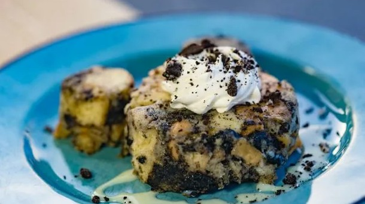

World Famous Oreo Bread Pudding

Description
Delicious award winning Oreo Bread Pudding! Passed down through generations, I'll be sharing the recipe here with you all.
What I feel makes this recipe great is you get the best of both worlds: on one hand it's not TOO sweet. But on another it's sweet enough to have you wanting more!
Below are the things you'll need to make your own!
Ingredients:
- 24 Oreo Cookies
- 1 1/2 Cups of Sugar
- 1 Tbsp Vanilla Extract
- 4 Cups of Half and Half
- 5 Large eggs
- 1lb Italian Bread
Most of these items can be found at your local grocery store. For our oreos we'll want to break them into quarter pieces
Directions
For Bread Pudding
- Preheat your oven to 350°F and spray a 9x13-inch baking pan with nonstick cooking spray. Set aside for later use.
- Cut your bread into one-inch cubes and place them into a large mixing bowl.
- Combine eggs, sugar, half and half, and vanilla extract in separate, medium-sized mixing bowl and whisk until fluffy. Pour results into large-bowl with cubed bread and stir gently to mix.
- Set large bowl aside for at least 15 minutes to allow the egg mixture to seep into the bread.
- Gently stir in quarter cut oreos
- Pour bread pudding mixture into prepared baking pan and spread out evenly.
- Bake for 45-50 minutes, until the top has set and a theromemeter placed in the center reads 165°F then let cool for 15 minutes.
For Toppings:
Whip heavy whipping cream in a bowl of an electric mixer fitted with a whisk attachment until medium peaks form
Cut bread pudding and palce on a plate
Drizzle with 1-2 teaspoons of sweetened condensed milk.
Top each serving with 2 tablespoons whipped cream and 1 tablespoon of crushed Oreos